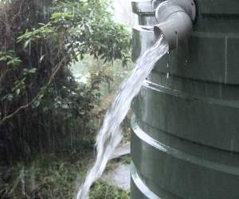
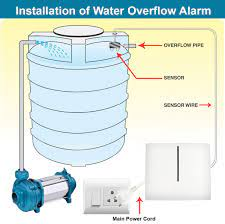
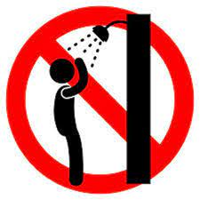
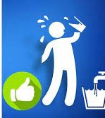
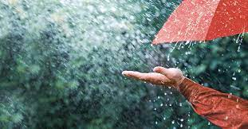
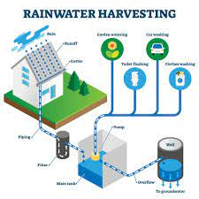
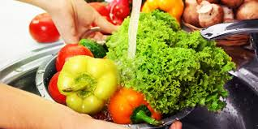
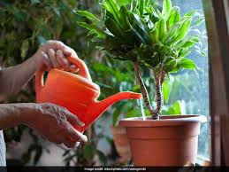
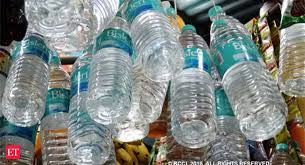
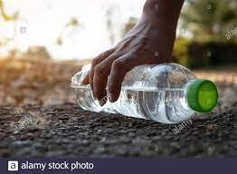

How Water Can Be Saved?
Idea 1: Fixing alarms to warn of water overflow in tanks


Idea 2: Use buckets instead of showers during bath


Idea 3: Implementation of Rainwater Harvesting


Idea 4: Use kitchen water for gardens


Idea 5: Reduce water wastage in marriages and hotels


Go back